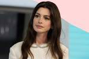

ANNA HATHAWAY

objective
Creative and dynamic professional who feels comfortable on the catwalk and in front of the cameras. Worked with De La Cruz and Holliston Design Crew.
Education
Fashion Design
State University of New York
2010-2015
Art & Design High School
Newyork University
2016-2021
Work Experience
Fashion Model and Influencer
The Rolfson Group
- 2018-Present
- New York
- Collaborated on influencer campaigns with Famous Footwear's, Space 46 Boutiques, and other social media platforms
- Catwalked for 10 different brands, with 50 individual designs being chosen for the main marketplace
- Coached 50 new employees on product knowledge with regard to industry trends
- collaborating with design team of 9 and achieved the best-selling brand in 2020
Fashion & Style Consultant
Padberg
- 2014 - 2015
- New York
- Managed high-end VIP clients, approximately 20 key accounts up to $1MN
- Crafted the $500K catwalk campaigns for Spring Summer 15', Fall/Winter 2015 and Pre Fall 2015.
- Relaunched a failed jacket category into over 1-billion VND monthly revenue category
Editorial Model
Mills Group
- 2014 - 2015
- New York
- Posted for over 35 shoots over the course of 2 years for magazines like Dazed, V, and Burga Style
- Represented Boreal Apparel at the New York Runway in 2016
SKILLS
- Social Media
- Influencer Campaigns
- Adobe Suite
- Digital Drawing
- Sketching
- Physically Fit
Achievements
-
Spokesperson for Loreal Magazine
- Featured on the cover of November 2019
- Led the Catwalk MainPiece Spring Summer 15
- Leading model of the $500K catwalk campaign for Spring Summer 15, which was viewed in 20+ countries
Contact